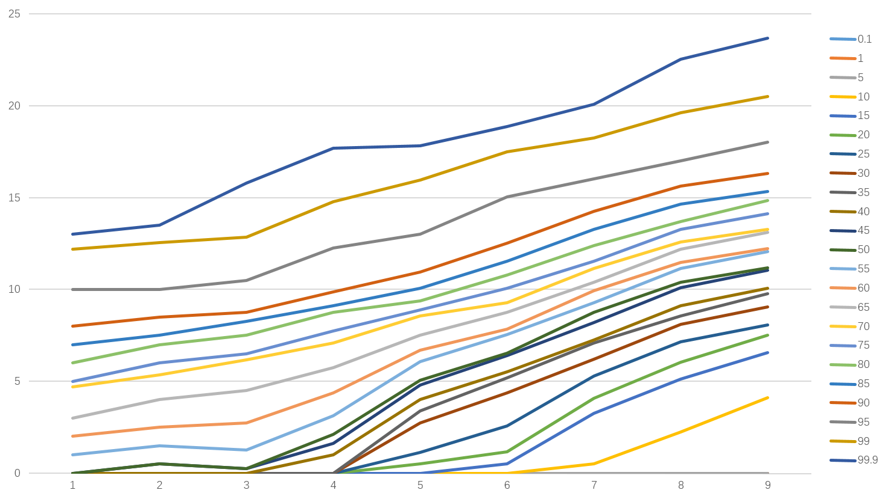

指数平滑原理
指数平滑是加权移动平均的进一步发展和完善，最初由美国经济学家布朗(Robert G Brown)于1959年首次提出。所谓平滑就是通过某种平均方式消除历史统计序列中的随机波动。指数平滑法是通过计算指数平滑值，配合一定的时间序列预测模型对现象的未来进行预测。其原理是任一期的指数平滑值都是本期实际观察值与前一期指数平滑值的加权平均。根据平滑次数不同，指数平滑法一般可分为：一次指数平滑、二次指数平滑和三次指数平滑等。
（1）一次指数平滑
当时间数列无明显的趋势变化，可用一次指数平滑进行预测。一次指数平滑来预测目标的本期实际值和本期预测值为基数，分别给予不同的权数求出指数平滑值作为未来的预测值。其指数平滑计算公式可表示为：
其中：和分别为 t 期和 t-1 期的一次指数平滑值，α(0<α<1)为平滑常数，为 t 时期的观测值。是和的加权算数平均数，随着α取值的大小变化，决定和对的影响程度，当α取1时， = ；当α取0时， = 。
具有逐期追溯性质，可探源至为止，包括全部数据。其过程中，平滑常数以指数形式递减，故称之为指数平滑法。指数平滑常数取值至关重要。平滑常数决定了平滑水平以及对预测值与实际结果之间差异的响应速度。平滑常数α越接近于1，远期实际值对本期平滑值影响程度的下降越迅速；平滑常数α越接近于0，远期实际值对本期平滑值影响程度的下降越缓慢。由此，当时间数列相对平稳时，可取较大的α；当时间数列波动较大时，应取较小的α，以不忽略远期实际值的影响。
有三种方法可以确定a：
- 差分-比率-均值法。
该方法认为，a 取值的大小关键取决于 t 期数本身变化的大小幅度，具体求取步骤为先根据时间序列的值求出，根据一级差分后的新序列，求出即其算数平均数，再分别用 / 得到新序列，求的算数平均值，即为较为准确的a值。 - 经验判断法。
主要依赖于时间序列的发展趋势和预测者的经验作出判断，当时间序列呈现较稳定的水平趋势时，选择较小的a，一般在0.05-0.2之间取值；当时间序列有波动，但长期趋势变化不大时，可以选择稍大的a值，常在0.1-0.4之间取值；当时间序列波动很大，长期趋势变化幅度较大，呈现明显且迅速的上升或下降趋势时，宜选择较大的a值，可在0.6-0.8之间选值，以使预测模型灵敏度高些，能迅速跟上数据的变化；当时间序列数据是上升（或下降）的发展趋势类型，a应该选取较大的值，常在0.6-0.1之间。 - 试算法。
根据时间序列情况，参照经验判断法，大致确定a的取值范围，然后取几个a进行试算，比较不同a值下的预测标准误差，选取预测标准误差值最小的a。
需要注意的是，在使用指数平滑法开始计算初始值时，如果能够找到以前的历史资料，那么，初始值的确定是不成问题的。数据较少时可用全期平均、移动平均法；数据较多时，可用最小二乘法。
如果仅有从开始的数据，那么确定初始值的方法有：
- 取 = ；
- 待积累若干数据后，取S1等于前面若干数据的简单算术平均数，如：。
（2）二次指数平滑
二次指数平滑是在一次指数平滑的基础上，再做一次平滑．它适用于具有线性趋势的时间数列．其指数平滑计算公式可表示为：
其中和分别t期的一次、二次指数平滑值，α(0<α<1)为平滑常数。
（3）三次指数平滑
三次指数平滑是在二次指数平滑的基础上再做一次平滑．它适用于具有线性趋势的时间数列．其指数平滑计算公式可表示为：
其中和分别t期的二次、三次指数平滑值，α(0<α<1)为平滑常数。
应用实例
以计算常模过程中的应用为例对指数平滑算法的计算进行说明。逻辑推理得分原始数据见下表。
我们选择了PCDP中相关的逻辑推理数据，如下:
| 百分位 | 日龄段1 | 日龄段2 | 日龄段3 | 日龄段4 | 日龄段5 | ... |
|---|---|---|---|---|---|---|
| 0.1 | 0.00 | 0.00 | 0.00 | 0.00 | 0.00 | ... |
| 1 | 0.00 | 0.00 | 0.00 | 0.00 | 0.00 | ... |
| 5 | 0.00 | 0.00 | 0.00 | 0.00 | 0.00 | ... |
| 10 | 0.00 | 0.00 | 0.00 | 0.00 | 0.00 | ... |
| 15 | 0.00 | 0.00 | 0.00 | 0.00 | 0.00 | ... |
| 20 | 0.00 | 0.00 | 0.00 | 0.00 | 1.00 | ... |
| 25 | 0.00 | 0.00 | 0.00 | 0.00 | 2.25 | ... |
| 30 | 0.00 | 0.00 | 0.00 | 0.00 | 5.50 | ... |
| 35 | 0.00 | 0.00 | 0.00 | 0.00 | 6.75 | ... |
| 40 | 0.00 | 0.00 | 0.00 | 2.00 | 7.00 | ... |
| 45 | 0.00 | 1.00 | 0.00 | 3.00 | 8.00 | ... |
| 50 | 0.00 | 1.00 | 0.00 | 4.00 | 8.00 | ... |
| 55 | 1.00 | 2.00 | 1.00 | 5.00 | 9.00 | ... |
| 60 | 2.00 | 3.00 | 3.00 | 6.00 | 9.00 | ... |
| 65 | 3.00 | 5.00 | 5.00 | 7.00 | 9.25 | ... |
| 70 | 4.70 | 6.00 | 7.00 | 8.00 | 10.00 | ... |
| 75 | 5.00 | 7.00 | 7.00 | 9.00 | 10.00 | ... |
| 80 | 6.00 | 8.00 | 8.00 | 10.00 | 10.00 | ... |
| 85 | 7.00 | 8.00 | 9.00 | 10.00 | 11.00 | ... |
| 90 | 8.00 | 9.00 | 9.00 | 11.00 | 12.00 | ... |
| 95 | 10.00 | 10.00 | 11.00 | 14.00 | 13.75 | ... |
| 99 | 12.18 | 12.94 | 13.10 | 16.72 | 17.15 | ... |
| 99.9 | 13.00 | 14.00 | 18.05 | 19.62 | 17.92 | ... |
可以对此作图：
图1 逻辑推理原始数据百分位图取a=0.5，则根据一次指数平滑公式计算一次指数平滑后的结果及平滑预测曲线。
可以看到，中间p50左右的曲线基本服从单调递增的规律，但是百分比越大或越小的曲线则出现了一定的波动，比如，最上面的p99.9曲线在年龄段从4-5的时候出现了下滑。出现这些情况的主要原因和数据本身的抽样有关。导致在部分年龄段并未出现相应的极大或极小值、或者本身这一区间的人群质量要远高于/远低于其他年龄层次的群体。
对于这种不规则的曲线，并且和时间有关，那么就可以考虑采用指数平滑的方式进行修正了。如下列图表
| 百分位 | 日龄段1 | 日龄段2 | 日龄段3 | 日龄段4 | 日龄段5 | ... |
|---|---|---|---|---|---|---|
| 0.1 | 0.00 | 0.00 | 0.00 | 0.00 | 0.00 | ... |
| 1 | 0.00 | 0.00 | 0.00 | 0.00 | 0.00 | ... |
| 5 | 0.00 | 0.00 | 0.00 | 0.00 | 0.00 | ... |
| 10 | 0.00 | 0.00 | 0.00 | 0.00 | 0.00 | ... |
| 15 | 0.00 | 0.00 | 0.00 | 0.00 | 0.00 | ... |
| 20 | 0.00 | 0.00 | 0.00 | 0.00 | 0.50 | ... |
| 25 | 0.00 | 0.00 | 0.00 | 0.00 | 1.13 | ... |
| 30 | 0.00 | 0.00 | 0.00 | 0.00 | 2.75 | ... |
| 35 | 0.00 | 0.00 | 0.00 | 0.00 | 3.38 | ... |
| 40 | 0.00 | 0.00 | 0.00 | 1.00 | 4.00 | ... |
| 45 | 0.00 | 0.50 | 0.25 | 1.63 | 4.81 | ... |
| 50 | 0.00 | 0.50 | 0.25 | 2.13 | 5.06 | ... |
| 55 | 1.00 | 1.50 | 1.25 | 3.13 | 6.06 | ... |
| 60 | 2.00 | 2.50 | 2.75 | 4.38 | 6.69 | ... |
| 65 | 3.00 | 4.00 | 4.50 | 5.75 | 7.50 | ... |
| 70 | 4.70 | 5.35 | 6.18 | 7.09 | 8.54 | ... |
| 75 | 5.00 | 6.00 | 6.50 | 7.75 | 8.88 | ... |
| 80 | 6.00 | 7.00 | 7.50 | 8.75 | 9.38 | ... |
| 85 | 7.00 | 7.50 | 8.25 | 9.13 | 10.06 | ... |
| 90 | 8.00 | 8.50 | 8.75 | 9.88 | 10.94 | ... |
| 95 | 10.00 | 10.00 | 10.50 | 12.25 | 13.00 | ... |
| 99 | 12.18 | 12.56 | 12.83 | 14.78 | 15.96 | ... |
| 99.9 | 13.00 | 13.50 | 15.78 | 17.70 | 17.81 | ... |

图2 一次指数平滑百分位图可以看到，数据整体的平滑度有所提升。在各个百分为上均相对符合一个同质性群体的成长。
再看看二次指数平滑的数据：
图3 一次指数平滑百分位图是不是觉得很神奇？整个数据都“光滑”了，而且符合单调递增的趋势。
这样局在一定程度上消除了由于群体本身的差异不同导致出现的年龄间误差。
结束语：
在运用指数平滑进行分析时，关键是对平滑系数的设置。
但是，也需要指出，任何方法使用都有局限性和缺陷。指数平滑法的最大缺陷就在于，原来的真值被替代了，对于我们看到的单调递增数据来说，平滑后的数据可能通常会比真值要更小（因为受到前一个数据点的影响，拉低了水平），因此在实际的常模使用中，我们也对此做出一些调整，在保证了每个区间的“形状”不变的情况下，对其进行了真值的校验，以确定其需要平移的单位量。（这一期就不细说了）